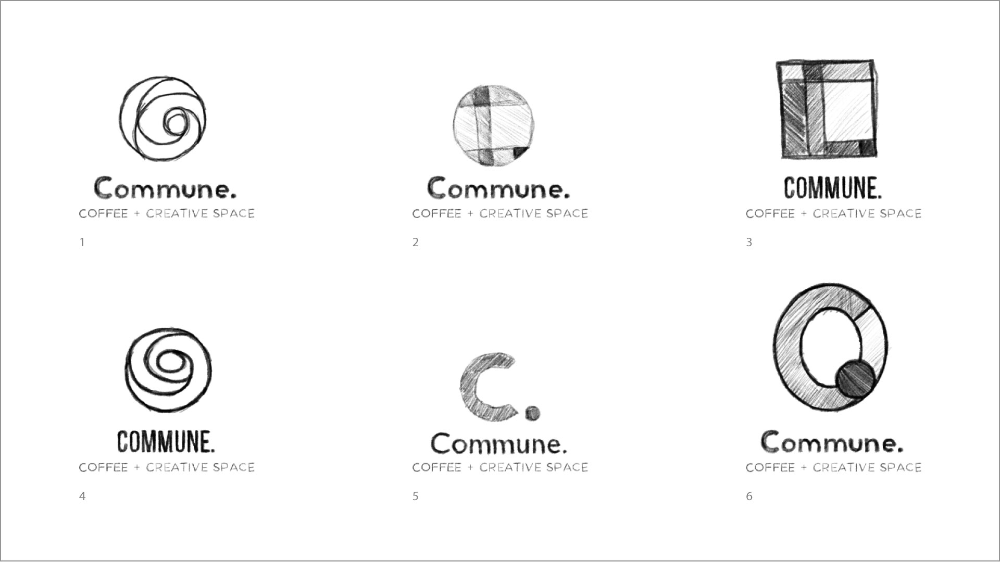

Commune. Brand Identity
Challenge: For an assignment, I was assigned a client with a made-up business called, “Commune.” It’s a coffee shop with an open space for creatives to participate in the community and work in an inviting space. My task was to design a responsive logo and a brand identity based on the client’s vision.
Solution: I worked with the client to ensure that this identity supports the ideas of community and creativity. Earth tones are used to invoke an inviting feeling and the prominent swirl resembles a “c” to embody the themes of the cafe, and to also be seen as the swirl that one might see in their cup of latte.
Deliverables: Logo, brand identity
Logos
Typography and Colors
Process Work
For this project, I started with two directions so I could take different approaches to the brand.
Theme 1: Industrial and Plant Heavy

Theme 2: Natural and Light
Color Compositions
After the client picked their 3 favorite logos from the thumbnail sketches, I proceeded to work on the colored vectors.
Credits
Mockup courtesy of GraphicBurger